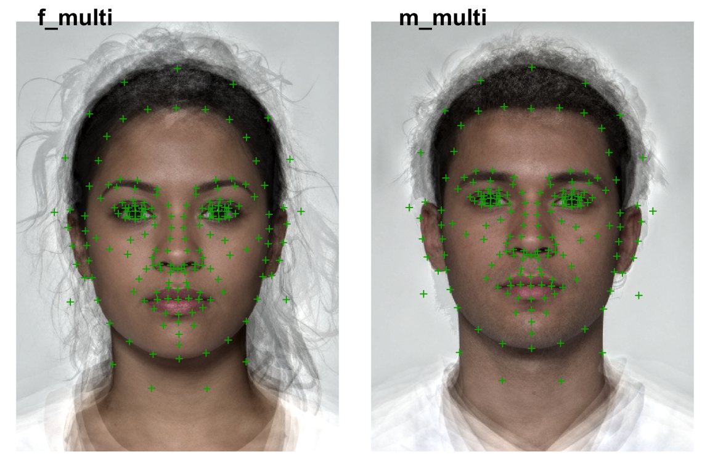
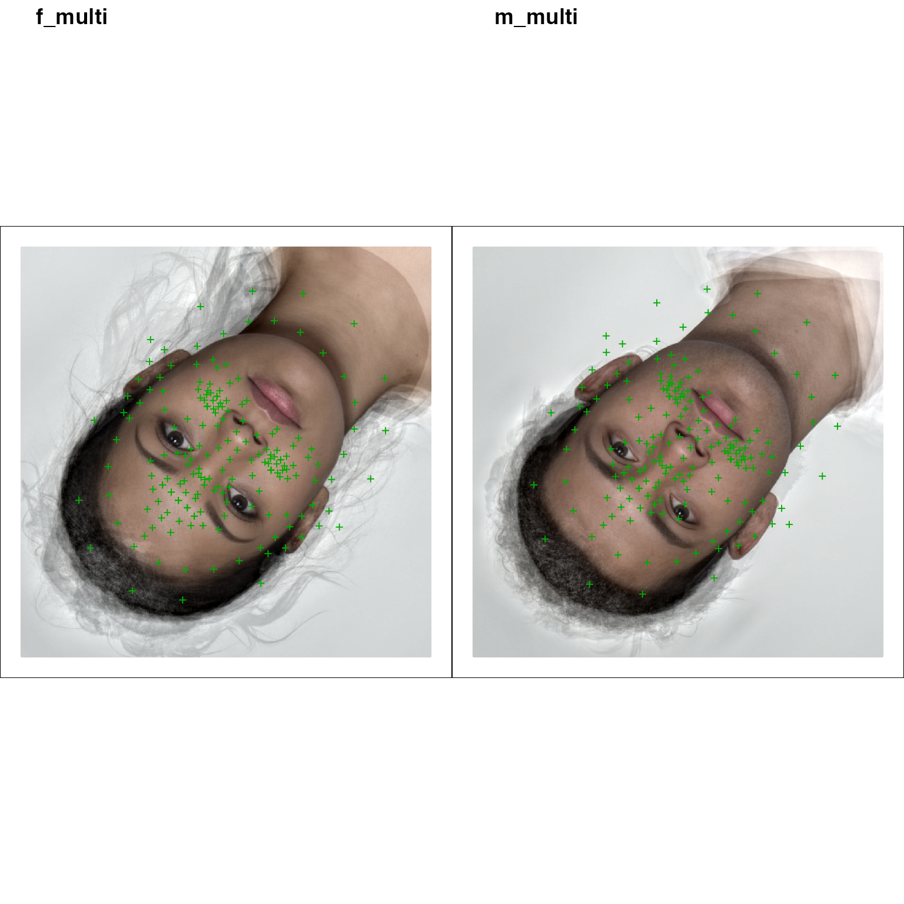
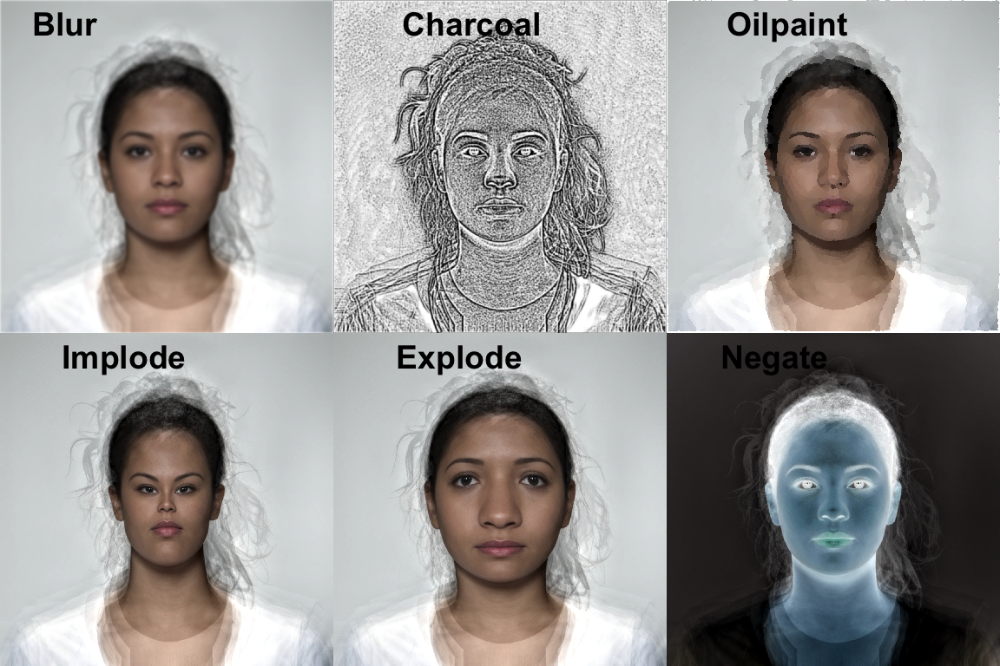

Load your images
path <- system.file("extdata/composite/", package = "webmorph") temlist <- read_tem(path, pattern = "multi\\.tem")
The lines are currently plotted as straight lines, but Lisa will add in the proper bezier curves soon.
plot(temlist, images = TRUE, line.plot = TRUE)

Original Images and Templates
Delete some points
remove_points <- frl_features("imprecise") temlist %>% pt_delete(remove_points) %>% plot(pt.shape = "index", pt.colour = "black", line.plot = TRUE, line.colour = c("red", "orange", "yellow", "green", "blue", "purple"))

Point removal
Crop
You can set the new width, height, x-offset and y-offset in pixels (must be > 2) or proportions.

Cropped Images and Templates
temlist %>% crop(width = 1.2, height = 1.2, x_off = -0.1, y_off = -0.1, fill = "hotpink") %>% plot(images = TRUE)

Cropped Images and Templates
Fun things
You can do some more fun things to the images (but not templates) with the {magick} package that is installed with {webmorph}.
image <- temlist[[1]]$img imglist <- list( magick::image_blur(image, radius = 10, sigma = 5), magick::image_charcoal(image, radius = 5, sigma = 2), magick::image_oilpaint(image, radius = 10), magick::image_implode(image, factor = 0.25), magick::image_implode(image, factor = -0.25), magick::image_negate(image) ) labs <- c("Blur", "Charcoal", "Oilpaint", "Implode", "Explode", "Negate") lapply(imglist, magick::image_ggplot) %>% cowplot::plot_grid(plotlist = ., nrow = 2, labels = labs)
